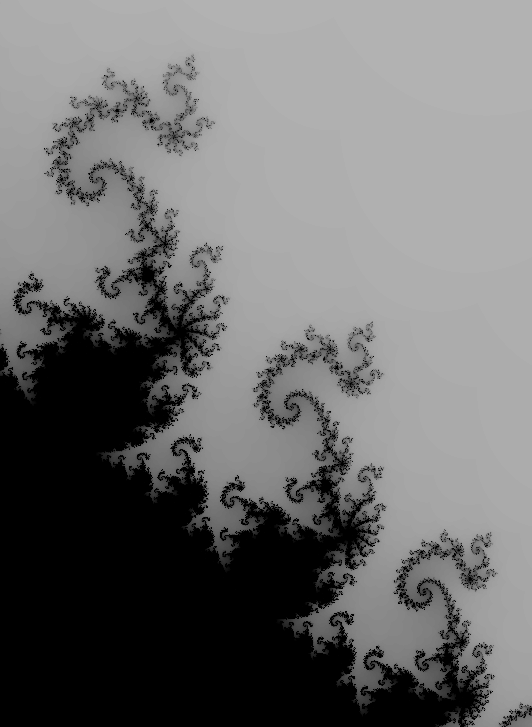
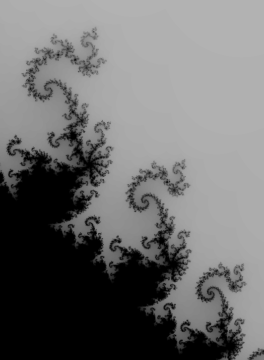

This program creates a simple grayscale visualization of the mandelbrot set.
Right click zooms in, left click moves diagonally towards the nearest corner, middle mouse click zooms out.
The user can select how many iterations of the equation can be done before points are plotted. By default it is set at 50, as this preserves the color changes and still gives a good amount of detail. Changes to the height and width only take place after either moving or zooming on the screen. Zoom is normally set to x2. However you can increase this up to x10.
This program took maybe 5 hours to put together, and is just version 1 of a project I hope to return to one day (but I probably wont).

 
